Chiusure A FiLO® progettate da esperti del cantiere a secco
Progettiamo e produciamo su misura chiusure filo muro per impianti, spazi residui e passaggi tra ambienti. Per interni ad alta finitura, dove il dettaglio non si negozia.
Il filo muro non è un pezzo da catalogo: è un processo costruttivo. Prima di produrre leggiamo progetto e cantiere. Così il filo muro risolve quello che serve senza complicare il lavoro, e alla fine resta solo una linea di matita.
- Progettate da chi le posava
- Dal secco, per il secco
- 25 anni di cantiere a secco
- Più di 1.500 professionisti supportati in 3 anni
- Seminari agli Ordini degli Architetti di Milano e Brescia
- Parli direttamente con chi progetta e produce
- Il supporto tecnico risponde in tempo reale
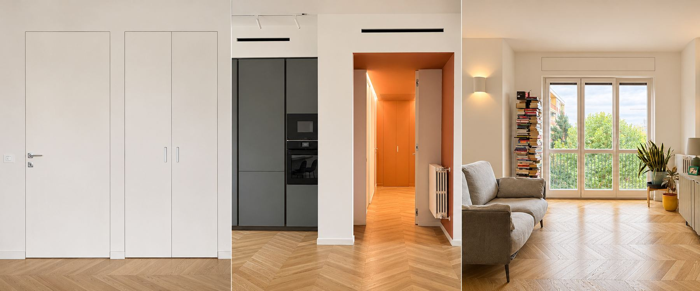
Il problema
Il filo muro non perdona
Quando funziona, non si vede. Quando non funziona, è l'unica cosa che si vede. Ma i problemi cominciano molto prima.
In cantiere
Si corre, si lavora due volte, si cercano stratagemmi. Si perdono tempo e ogni vantaggio che il filo muro dovrebbe dare, e nascono discussioni. Il filo muro diventa un problema da gestire, non un aiuto.
A lavori finiti
Emergono limiti estetici e funzionali, subito o con il tempo: crepe, linee sfalsate, chiusure che non si aprono come dovrebbero. Il filo muro diventa il punto su cui si ferma lo sguardo, e che può aprire contestazioni e rifacimenti.
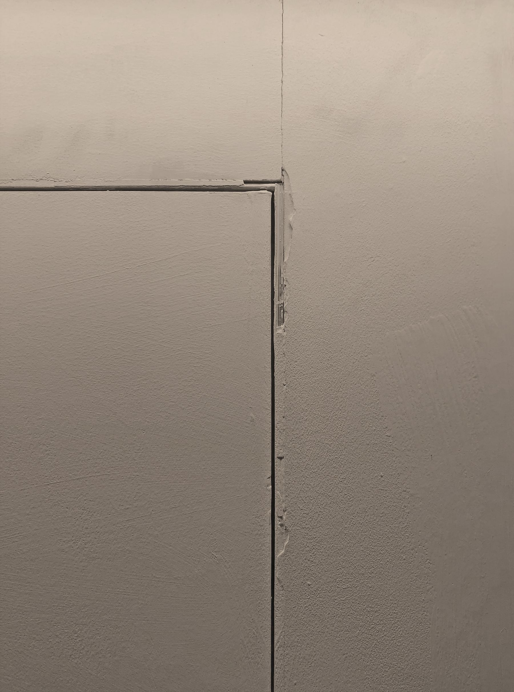
✕ DA EVITARE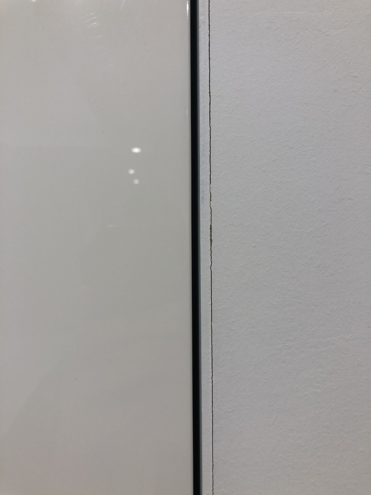
✕ DA EVITARE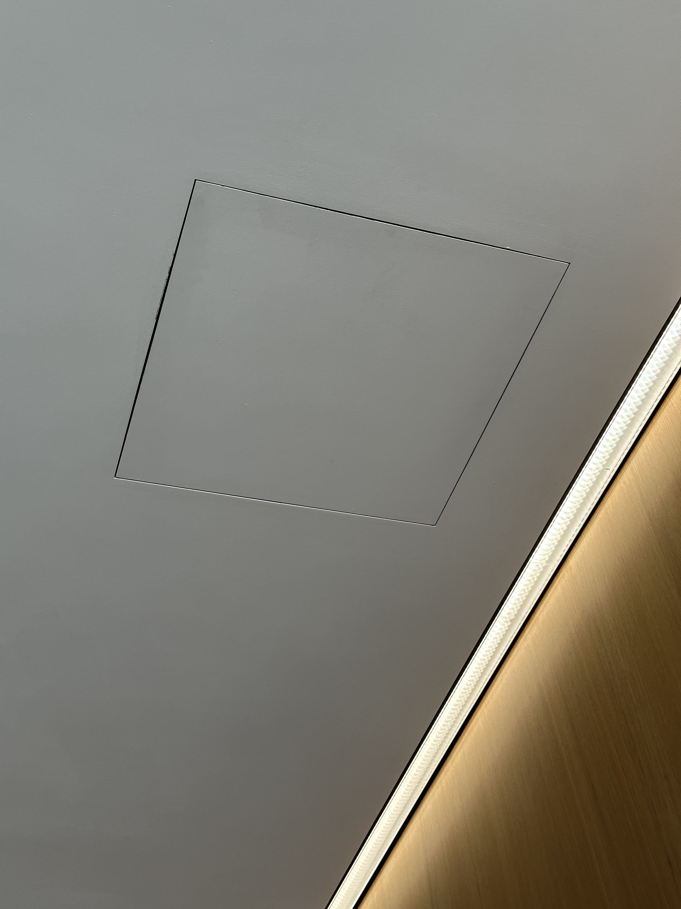
✕ DA EVITAREErrore reale di cantiere: cosa succede senza metodo.
Perché succede
Una posa a regola d'arte è la condizione di partenza di ogni lavoro ben fatto, e la diamo per scontata. Detto questo, le cause sono quasi sempre tre.
Il momento sbagliato. Se il filo muro si decide quando le pareti sono già chiuse, non si progetta più: si adatta. È la causa che porta a sbagliare di più.
La chiusura sbagliata per quella situazione. Se la tipologia non corrisponde a quello che c'è da chiudere, per esempio una botola dove serviva un'anta tecnica, si forza tutto il resto.
Una chiusura senza tecnica. Se dietro la chiusura non c'è ricerca, la posa diventa una lotta, e nemmeno il posatore più bravo può sempre rimediare.
Succede spesso: i limiti di una chiusura vengono trasmessi come conoscenza tecnica. Si insegna come aggirarli, ci si organizza per gestirli, si accetta che facciano parte del lavoro. A un certo punto nessuno si chiede più perché esistano.
Le Chiusure A FiLO® nascono proprio per questo: con la chiusura giusta, nel momento giusto, quegli accorgimenti non servono.
Non basta una buona chiusura
Il filo muro è una tecnologia costruttiva: conta come è progettata la chiusura, al millimetro. Ma da sola non basta. Il filo muro funziona quando quattro cose stanno insieme:
il momento giusto, deciso con il progetto e con il cronoprogramma del cantiere;
la chiusura giusta per quella situazione, non la più vicina a catalogo;
una chiusura progettata da chi la posa, pensata per entrare nella costruzione senza lavorazioni in più;
qualcuno che conosce il cantiere e ti segue dalla prima idea all'ultima regolazione.
Questo insieme ha un nome: Metodo A FiLO. Niente richiami, cantiere che non aspetta, nessuna scelta da fare da solo.
Quello che trovi solo qui
Non serve dirlo: si vede nel dettaglio.
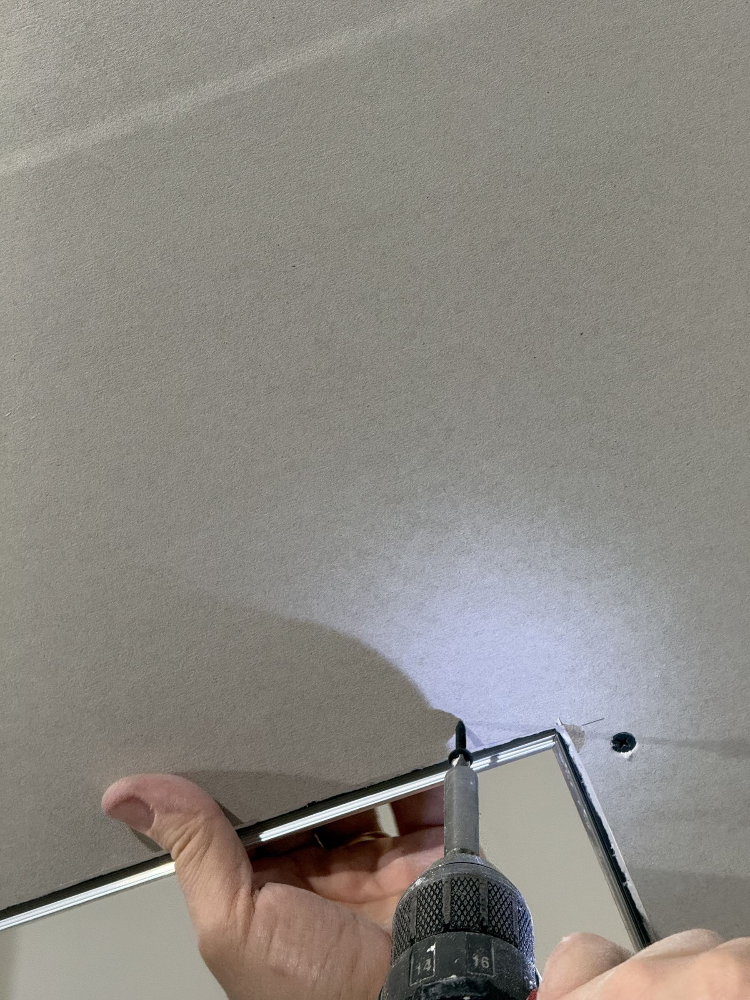
Progettate da chi le posava.
Ogni Chiusura A FiLO nasce dalla stessa esperienza di cantiere e fa parte dello stesso sistema. Situazioni diverse, soluzioni diverse, ma una logica comune: chi posa sa già cosa aspettarsi, chi progetta sa già cosa può risolvere e che risultato otterrà. Conosci una Chiusura A FiLO, e le conosci tutte.
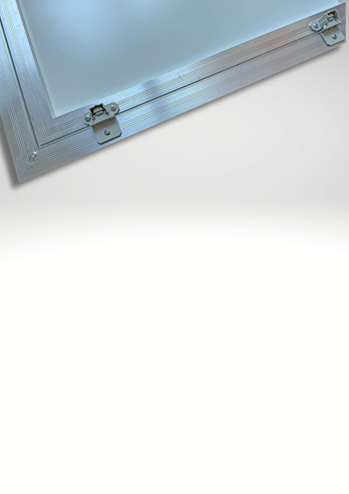
Tecnologia nostra, dentro ogni chiusura.
Soluzioni brevettate e componenti progettati da noi, uno per uno: telai, ante, meccanismi, accessori. Non assembliamo pezzi da catalogo: ogni dettaglio è pensato per funzionare, durare e sparire esattamente come lo abbiamo voluto. E lavora così perché lavora insieme a tutti gli altri.
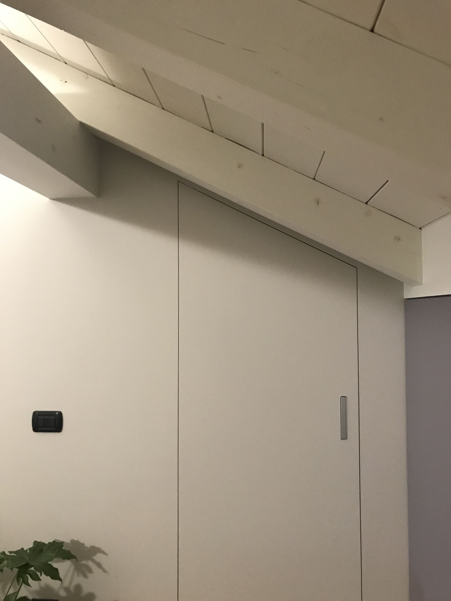
La linea di matita.
Alla fine resta solo questa: uno scuretto sottile e costante su tutto il perimetro, che resta tale nel tempo, apertura dopo apertura.
Il Metodo A FiLO
Non è il progetto che si adatta al filo muro. È il filo muro che si adatta al progetto.
E in cantiere non serve stravolgere nulla: serve la sequenza giusta.
Noi nasciamo dal secco, per il secco. Il filo muro nasce per la costruzione a secco e funziona al meglio con lei. Condividono la stessa logica: si progetta prima, si coordina con precisione, non si improvvisa. Le chiusure entrano mentre si costruisce: si fissano alla struttura, si chiudono con le lastre: impianti, spazi residui e passaggi sono risolti dentro la costruzione, non dopo.
Se puoi scegliere, scegli il secco. Quando bisogna convivere con la muratura, il filo muro funziona anche lì.
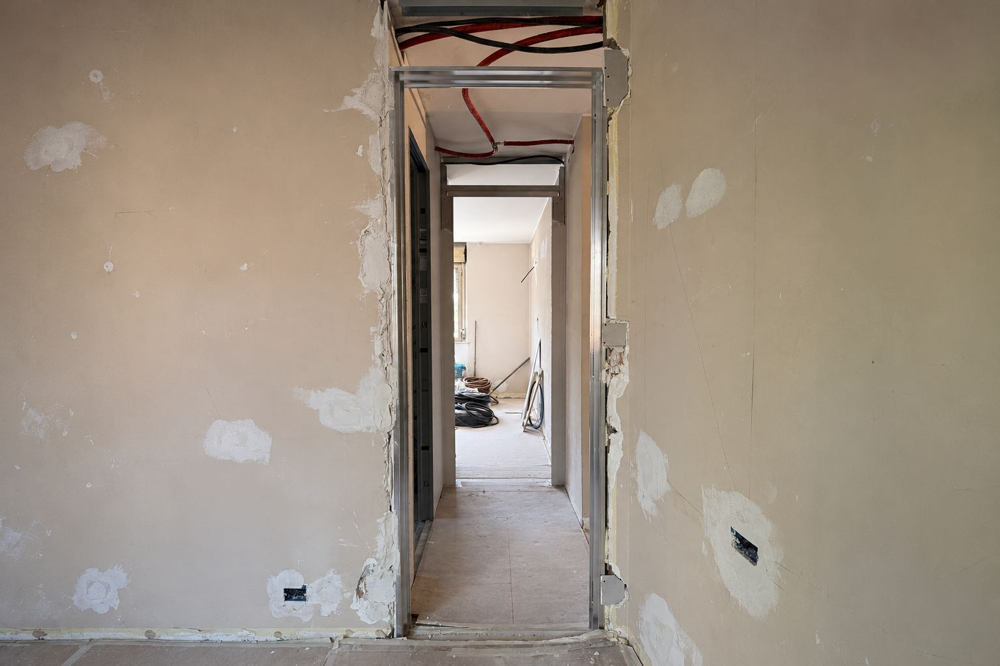
Rischio
Crepe, rifacimenti, contestazioni.
Chiusure progettate da chi le posava e scelte con te, sul tuo progetto e sul tuo cantiere: il rischio di sbagliare si riduce prima ancora di produrre.
Velocità
Un cantiere fermo ad aspettare la chiusura, o costretto a tornare indietro.
La chiusura arriva quando serve, né prima né dopo: la produzione segue il cronoprogramma, di norma in 5 giorni lavorativi dalla conferma dell'ordine, salvo personalizzazioni particolari. In emergenza, FAST LINE su richiesta.
Facilità
Scegliere da solo, su un catalogo, e assumerti il rischio della scelta.
Non scegli da solo: leggiamo progetto, cronoprogramma e stato di fatto, progettiamo con te le chiusure su misura e ti seguiamo fino alla posa. Il supporto tecnico risponde in tempo reale e, se serve, Mentory porta un tecnico in cantiere.
Se qualcosa va storto
La discussione su chi ha sbagliato.
Se c'è un errore, nostro o tuo, il supporto valuta come ripristinare il risultato.
Nel filo muro, il supporto vale più del prodotto.
Dal secco, per il secco
Il filo muro lo abbiamo posato, prima di produrlo
Gheorghe Cazan e la sua squadra hanno lavorato 25 anni nel cantiere a secco, in negozi, uffici e appartamenti di alto livello. Il filo muro lo hanno posato, ne hanno vissuto i limiti e hanno deciso di riprogettarlo.
Oggi COMPASSiN® la guidano Gheorghe ed Ecaterina Cazan, architetto: il cantiere e il progetto allo stesso tavolo. Da questo incontro nasce il metodo, perché la chiusura giusta risolve molto, ma non tutto: serve anche decidere quando e come entra in cantiere.
Per te significa parlare con qualcuno che conosce sia il tuo disegno sia il tuo cantiere.
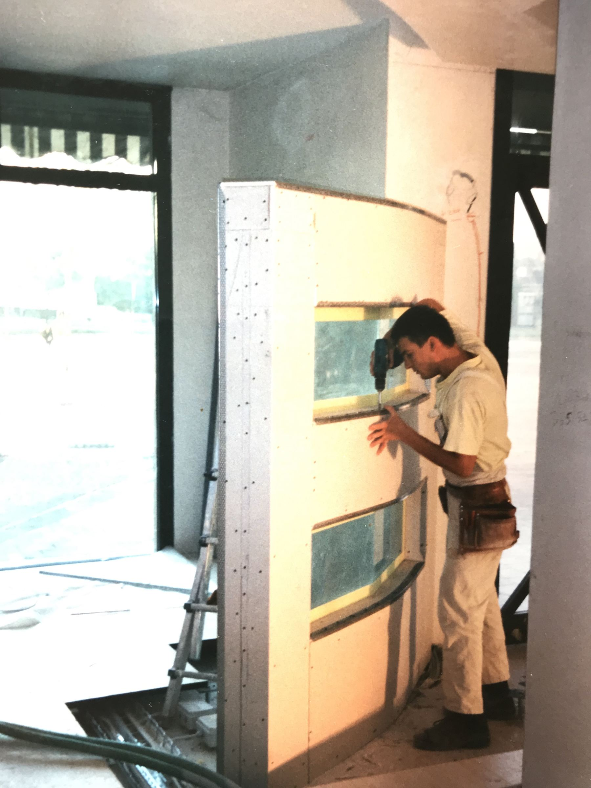
Lavori, riviste, testimonianze
La prova è in cantiere
Lavori finiti
Interni reali, a lavori conclusi: del filo muro resta solo una linea.
Pubblicati su
Articoli tecnici scritti da noi e casi studio realizzati con architetti e imprese, pubblicati sulle riviste di settore.
Cosa dicono i professionisti del cantiere
«Da quando collaboriamo con COMPASSiN® abbiamo avuto risultati che durano nel tempo e non siamo mai stati richiamati.»
«Ho raggiunto la soddisfazione personale di realizzare ciò che avevo in mente e la soddisfazione del cliente, che ha sempre apprezzato il risultato finale senza contestazioni.»
«Ora so sempre come preparare preventivi attendibili per i miei clienti.»
«Con l'aiuto del tecnico di riferimento non ci sono stati mai limiti alle possibilità compositive.»
«Il valore aggiunto di COMPASSiN è proprio il supporto tecnico. Non è solo un catalogo o una scheda tecnica.»
«Ti puoi confrontare anche su WhatsApp: mandi una foto e arrivi velocemente a risolvere il problema.»
«È bello poter parlare con qualcuno che ne capisce, anziché mandare e-mail o compilare moduli. In questo modo non si sbaglia niente.»
Segnaposto del prototipo · Spazio per recensioni estese, aggiornabile dal pannello. Nessun testo fornito.
La grammatica del filo muro
Non esiste la chiusura universale
Ogni chiusura nasce per una situazione precisa: un impianto da raggiungere per la manutenzione, un accesso da usare ogni giorno, uno spazio di risulta da trasformare in funzione. Per questo una parola generica, «botola», «sportello», «porta», conduce quasi sempre a una scelta altrettanto generica.
Per togliere questa ambiguità abbiamo dato un ordine al filo muro: la grammatica del filo muro. Nomi, funzioni e categorie chiare, per capire cosa il filo muro può risolvere in ogni progetto e in ogni cantiere, e decidere con consapevolezza invece che per approssimazione.
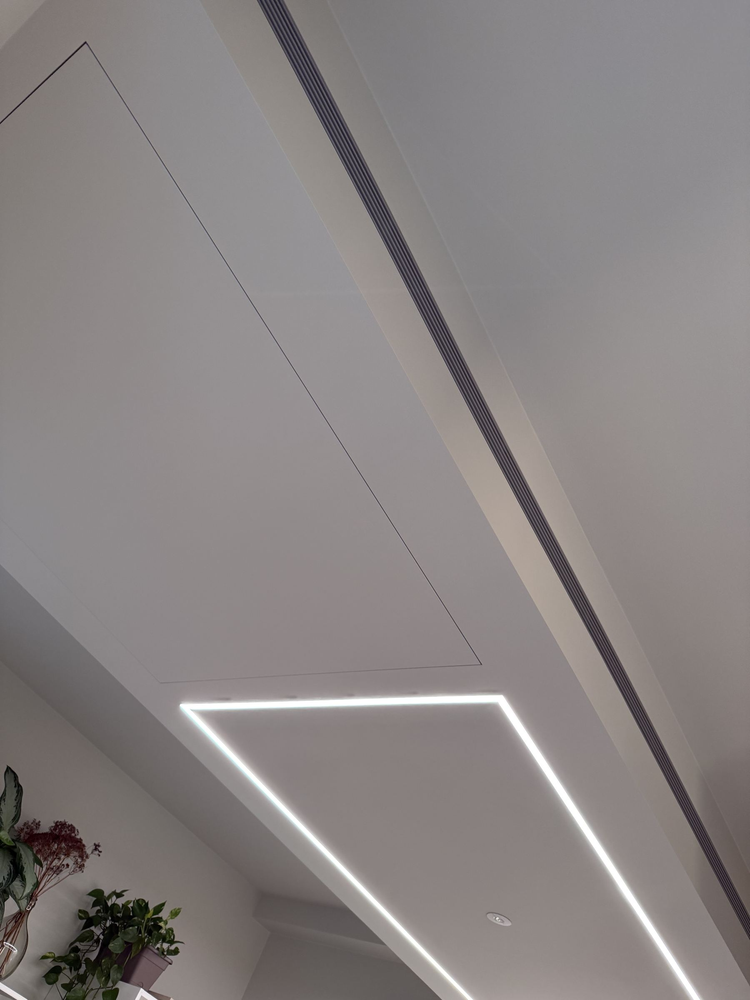
Impianti.
Non esiste «l'impianto»: esistono macchine e apparati diversi, a soffitto o a parete, grandi e piccoli, ognuno con le sue esigenze di accesso e manutenzione. Anche qui, nessuna chiusura vale per tutti.
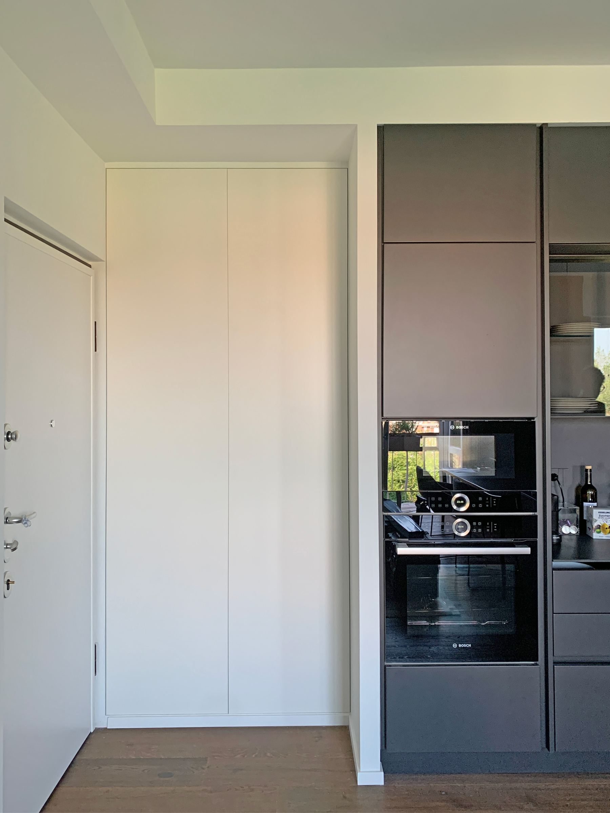
Spazi residui.
Nicchie, sottoscala, ripostigli in quota: da spazi di risulta a spazi utili, definiti mentre si costruisce.
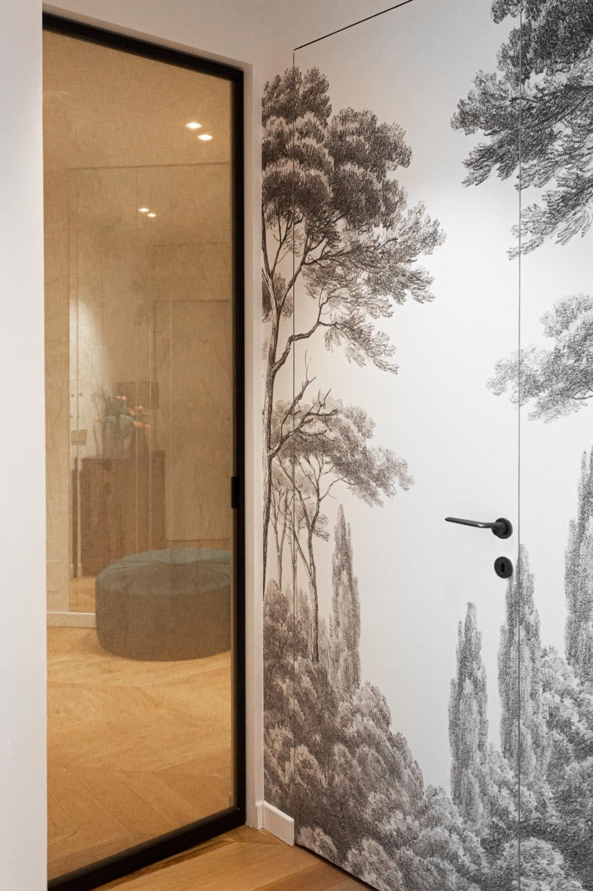
Passaggi tra ambienti.
Porte filo muro su misura, anche a tutta altezza. Il passaggio resta, la cornice sparisce.
Foto reale di cantiere, non render.
Hai un progetto o un cantiere in cui vuoi il filo muro?
Non devi sapere già quale chiusura serve, e parli direttamente con chi progetta e produce. Prepara quello che hai, pianta, foto del cantiere, cronoprogramma, idee, e scegli da dove parti: un esperto del cantiere ti ricontatta per il primo confronto tecnico.
Scegliere la chiusura non è una questione di budget: è una questione di quanto ti costa sbagliare.
Se progetti
Porti la pianta, le tue idee e la situazione del cantiere. Insieme capiamo cosa risolvere con il filo muro e quando deciderlo, progettiamo le chiusure su misura e ti aiutiamo a coordinare impresa e impiantisti. Il filo muro resta al servizio del tuo progetto, non il contrario.
Porta il tuo progettoSe costruisci
Ci mandi la richiesta e le informazioni sul cantiere. Facciamo la diagnosi, ti diciamo cosa serve e quando, e ti aiutiamo a realizzare quello che il progetto prevede e il committente si aspetta. Quando serve, un tecnico risponde: il cantiere non si ferma ad aspettare.
Porta il tuo cantiereSe coordini cantieri complessi
Impianti, spazi residui e passaggi con un solo interlocutore, dal progetto alla chiusura lavori. Leggiamo con te il cronoprogramma e teniamo allineati progettista, impresa e impiantisti: meno fornitori da coordinare, meno passaggi in cui sbagliare.
Parliamo del tuo cantiereRisorse sul filo muro
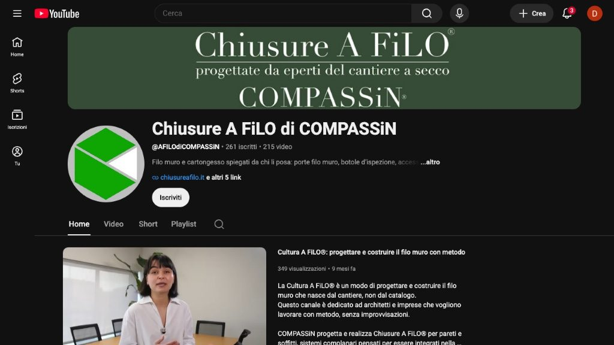
YouTube
Video dal cantiere: come si progetta, si coordina e si posa il filo muro.
Guarda i video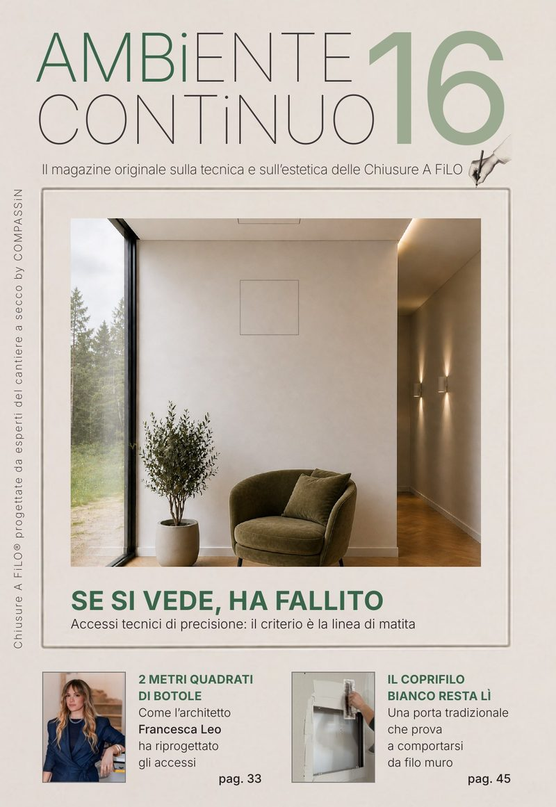
AMBiENTECONTiNUO
Il magazine sulla tecnica e sull'estetica delle chiusure a filo. Metodo, cantieri reali e strumenti per chi progetta, costruisce e integra il filo muro: non per parlare di noi, per parlare di come si lavora bene.
Scopri AMBiENTECONTiNUOBlog
Articoli tecnici e risposte alle domande che arrivano ogni giorno da progetto e cantiere.
Veloci, su misura, niente intoppi.